01 - Designing ecological experiments
Guy F. Sutton
Centre for Biological Control
Rhodes University, South Africa
Email: g.sutton@ru.ac.za
“To consult the statistician after an experiment is finished is often merely to ask them to conduct a post mortem examination.
They can perhaps say what the experiment died of.”
Ronald A. Fisher
Basic Principles of Experimental Design
- Randomisation
- Blocking
- Confounding
- Replication
1. Randomisation
- Inference and proper statistical analysis require that data/measurements are independent
- True independence is (usually) impossible
- We can do multiple things to maximise independence:
- Take a random sample from the population
- Assign treatments randomly to the experimental units
- Randomisation reduces bias and increases the estimation/accuracy of our treatment effect
Randomisation example
- Let’s say we want to spray 10 plants with pesticide, and 10 plant with water, and then inoculate plants with MNB larvae and measure larval survival.

Randomisation gone wrong
- If we randomly allocate 2 rows of 5 plants to receive the pesticide treatment, and the other 2 rows the water treatment.
- Is this an appropriate experimental design?
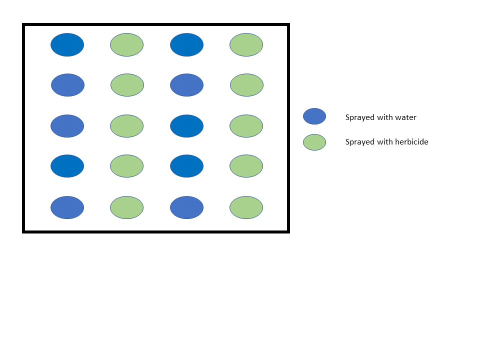
Randomisation gone wrong - bias
- Not a great experimental design
- Allocation is not truly random
- Introduces bias into our results from the one block receiving more sun
- Overestimate the
pesticidetreatment effect, incorrectly.
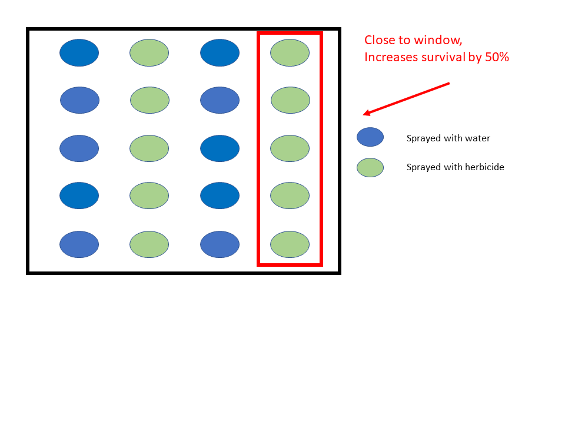
Completely randomised design (CRD)
- Completely randomised design (CRD) is the simplest experimental design.
- Treatments are allocated completely randomly to the experimental units (more on this term later!).
- Each unit must have an equal chance of receiving any treatment.
- Only appropriate when units are homogeneous (consistent), so typically only used in the lab
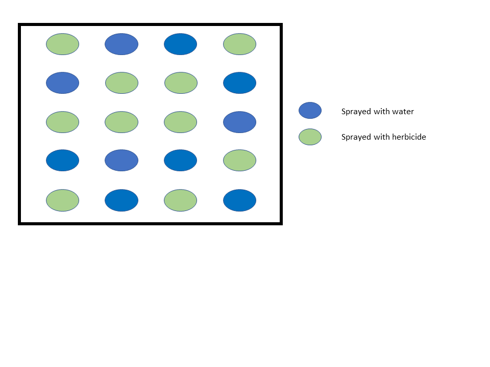
2. Blocking
- Blocking is used to include other factors in our experiment which contribute to undesirable variation.
- Good experimental design is largely dependent on using ‘blocks’ effectively to control for background variation and other factors that can introduce bias into our experiments and results.
Experimental error and blocking
- Blocking is used to control and account for experimental error:
- Experimental error refers to the variance between-blocks.
- We are not specifically interested in the differences between-blocks, but, we must account for this variation before we estimate the effect of our treatments.
Experimental error example
- For example, you could run a field trial on multiple farms (the ‘block’) to account for differences in environmental conditions between farms when looking at pesticide efficacy.
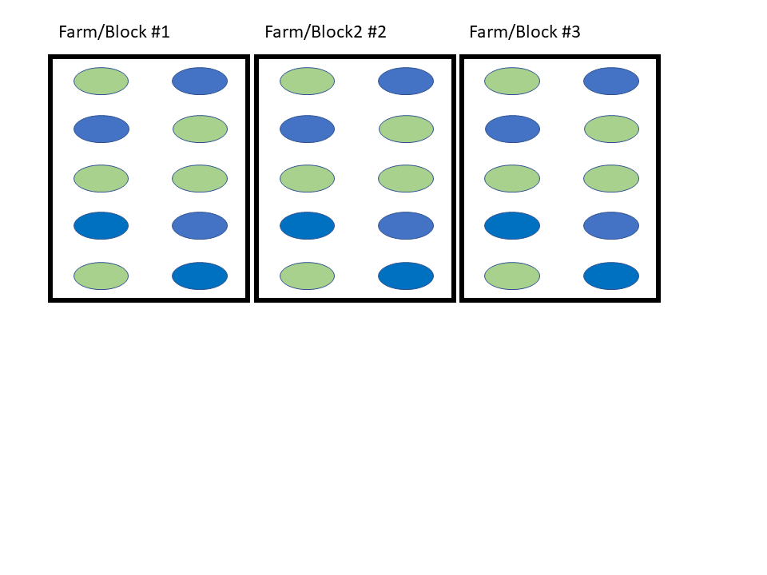
Experimental error example
- By using blocks, we can control for biases that may occur due to differences between blocks, and as a way of accounting for background noise in the experiment
- Otherwise, we will be attributing any variation between blocks to variation caused by our treatments applied
- This often leads to drastic over/underestimation of the treatment effects
- Otherwise, we will be attributing any variation between blocks to variation caused by our treatments applied
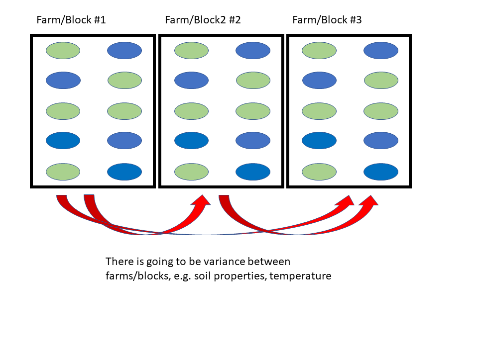
Randomised complete block design (RCBD)
- Randomised complete block design (RCBD) is probably the most popular experimental design.
- Treatments are allocated completely randomly to the experimental units, as per CBD earlier.
- Experimental units are grouped into blocks to minimise variability within blocks, and maximise variability between blocks.
- This means that only the within-block variation contributes to experimental error.
- With enough blocks (at least n = 5), allows us to make our results more generalisable.
- Perfect for both lab and field-based studies
- Treatments are allocated completely randomly to the experimental units, as per CBD earlier.
3. Confounding
- When running experiments, there may be factors that unknowingly bias our results, which we need to account for designing the experiment.
- We just spoke about blocking above. Blocking is often done to control for confounding or unwanted background variation.
- E.g. If we sample 20 orchards on a farm for MNB and compare trap counts between traps of different colours. Let’s say that 10 orchards are found along a river, and the other 10 orchards are not along the river.
- We would need to control for the potential effect of the river on trap counts, despite not necessarily being interested in this effect, before looking at the trap colour effect.
- Allocate 5 orchards along the river one trap colour, and 5 orchards another trap colour.
- Even better, allocate multiple traps of each colour to each orchard
- Do the same thing for the orchards not along the river
- These are called nuisance variables
4. Confounding
- Another special case of confounding is ensuring that the experimental design is actually suitable (is not confounded itself)
- To do this, we need to design appropriate experimental controls
- Controls help to evaluate whether there are aspects other than the treatment effect that may be influencing the experiment
4. Confounding
- If we are trying to isolate novel bacteria from the gut of MNB by culturing swabs of gut contents on agar plates
- How do we confirm that our experimental design is appropriate?
4. Confounding
- Ideally, we want to design and implement two types of experimental controls:
- Negative control: This is a treatment we apply that we expect no effect.
- This is what most people think of when talking about controls.
- Typically, negative controls are used to show we aren’t getting contamination/spillover
4. Confounding
- Ideally, we want to design and implement two types of experimental controls:
- Positive control: This is a treatment that we know produces a positive result.
- If a negative result is obtained, we know our experiment didn’t work.
4. Confounding
If we are trying to isolate novel bacteria from the gut of MNB by culturing swabs of gut contents on agar plates
- What is an appropriate negative control?
- Swab agar plates with loops that haven’t been soaked in gut content solution (e.g. water loops)
- This confirms that any bacterium that grows on the agar plates comes from the gut content solution being swabbed, and not from contamination during the swabbing procedure
4. Confounding
If we are trying to isolate novel bacteria from the gut of MNB by culturing swabs of gut contents on agar plates
- What is an appropriate positive control?
- Swab agar plates with loops that have been soaked in a solution of a bacterium that is known to grow on the agar plates being used
- This confirms that our application of the treatment works
4. Replication
- Most scientists fully appreciate the need for replication
- The problem being is that there is often a mismatch between the scale of the replication and the treatments we apply
- We apply the replication at the wrong spatial or temporal scales
- Replication allows us to distinguish between differences between the treatments we apply versus confounding variables / background noise
4. Replication
Estimation of experimental error: We must be able to estimate and account for experimental error.
Experimetnal precision: Replication ensures that we obtain precise estimates about the treatment effect from our study.
Scope of inference: Replication in space and/or time allows us to make our study more generalisable.
The Experimental Unit
This is the arguably most important facet to designing good experiments.
- Replication must be applied at the correct scale of the experiment!!!
- Experimental unit: The smallest unit or physical entity that can receive any treatment.
- This is the entity the researcher wants to make inferences about
- Sampling unit: The physical entity from which the measurements/observations are taken.
The Experimental Unit
- For example, let’s consider a study investigating the effect of pesticide application on MNB survival in the soil.
- Two fish tanks are used, each filled with soil, and 20 MNB larvae placed in each tank.
- One tank was sprayed with water (control) and the other tank sprayed with a herbicide solution (treatment).
- The measurement we take is whether each MNB larvae pupated or not.
The Experimental Unit
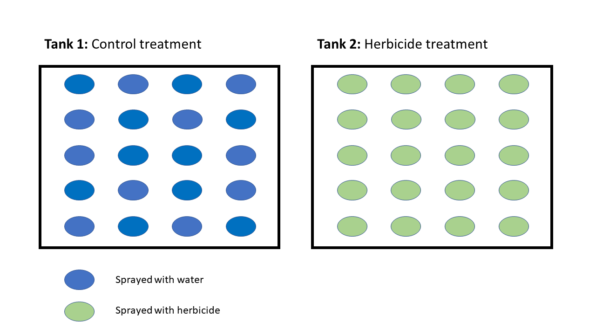
It must be possible for any sampling unit to receive ANY treatment
The Experimental Unit
Experimental unit = the tank
(need both tanks to apply all treatments)
The Experimental Unit
Sampling unit = Each larvae
The Experimental Unit - Round 2
What about if we filled 500ml cups with soil and placed individual MNB larvae into each cup?
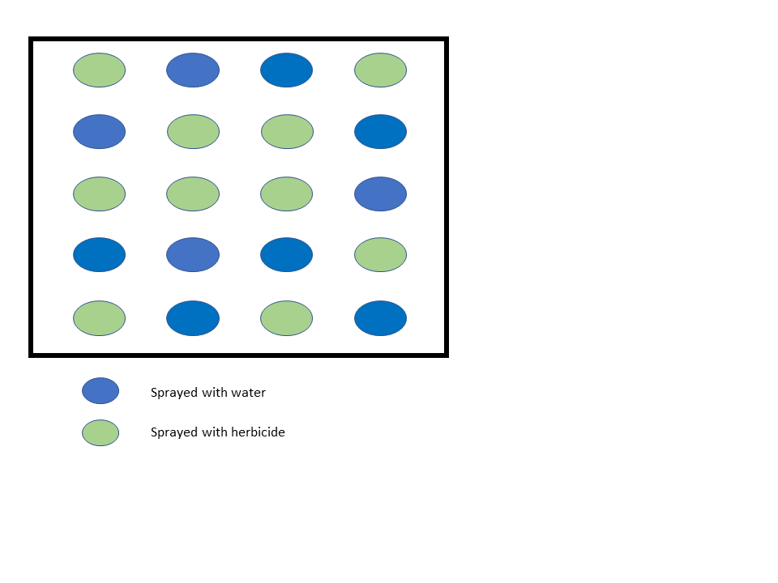
Experimental unit:
cup
Sampling unit:
also the cup!!!
Experimental units = sample size
- One of the most common mistakes I see is researchers equating ‘number of samples = no. of sampling units’
- Number of sample units usually DOES NOT equal sample size
- Number of complete experimental units EQUALS sample size!!!
- i.e. Sample size = number of times we are able to apply our full set of treatments
- As such, we need to replicate the experiment based on experimental units, not sample units.
Sample size - Example 1
No. of experimental units:
1
No. of sampling units:
40 (20 per treatment)
Sample size - Example 2
No. of experimental units:
10
No. of sampling units:
20
(10 per treatment)
An example
- Let’s consider a field study to assess 5 different traps for MNB abundance estimates.
- We have 5 farms to perform the study, and 5 orchards at each farm.
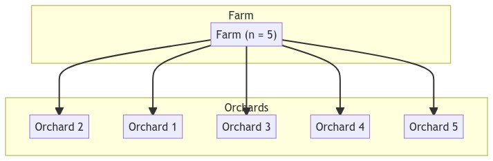
A bad experimental design
- We put all 5 reps for each trap colour in their own orchard.
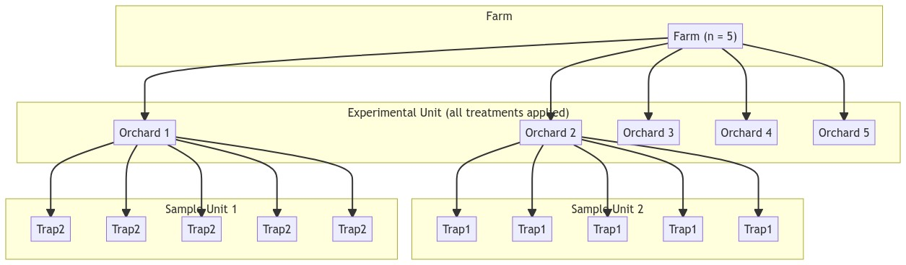
- Experimental unit: All 5 orchards combined (farm = 1 rep)
- Sampling unit: Individual trap
- Sub-sample: Individual trap
A better experimental design
- We put 1 rep of each trap type in each orchard
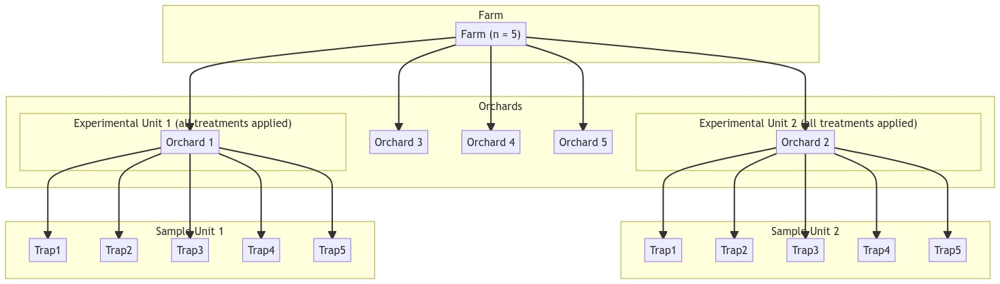
- Experimental unit: Individual orchard (farm = 5 reps)
- Sampling unit: Individual trap
- Sub-sample: None
Test your skills
- Let’s assume you want to run an experiment investigating the effect of 2 new artificial diets that have been developed on MNB survival to improve rearing conditions in the lab.
- You want to know which
dietMNB should be reared under to maximize the number of adults that emerge after 25 days.
- You want to know which
Test your skills
You want to know which
dietMNB should be reared under to maximize the number of adults that emerge after 25 daysRough experimental design:
- Larvae are reared in small jars, with 10 larvae placed in each jar
- You have 2
diettreatments (diet1,diet2) - You place these jars into a constant environment room
- Your response variable is the cumulative number of adults that have emerged on day25.
- Let’s assume that we decide to use 10 jars per diet treatment
Controls
- How many jars do we need?
- At least 30, if not 40.
- Positive control: 10 jars of the diet currently used to rear MNB. This is the baseline to confirm that the new diet work better, worse, or comparably to the current diet used.
- Negative control: 10 jars with no diet
- Why?
- What if all the diets produce comparable numbers after day 25?
- Negative control confirms whether the diets worked at all (i.e. the larvae actually fed on the diets)
- If diet treatments were comparable to negative control, the experiment didn’t work
- Why?
- At least 30, if not 40.
Defining experimental units
If we put 10 jars x 3 diet treatments into the CE room
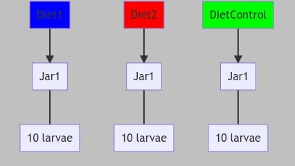
- What is the experimental unit?
- 1 complete set of diet treatment jars
- 1 jar of
Diet1(10 larvae) - 1 jar of
Diet2(10 larvae) - 1 jar of
DietControl(10 larvae )- Therefore: 3 jars, 30 larvae = 1 experimental unit
- 1 jar of
- 1 complete set of diet treatment jars
Defining sampling units
If we put 10 jars x 3 diet treatments into the CE room
- What is the sampling unit?
- 1 jar = 1 sample unit
- Our response variable is the cumulative number of MNB adults that emerged which is measured at the level of the individual jar
- 1 jar = 1 sample unit
Defining sub-sampling units
If we put 10 jars x 3 diet treatments into the CE room
- Is there/what is the sub-sample unit?
- There isn’t a sub-sample in this experimental design
- We are taking the measurements at the individual jar level (cumulative number of MNB adults that emerged per jar)
- We aren’t taking measurements at the larval level, which if we did, would mean that larvae = sub-sample
- There isn’t a sub-sample in this experimental design